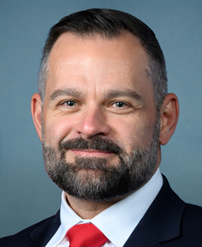

کوری میلز
Cory Mills
نماینده، جمهوریخواه، فلوریدا
نمرهٔ کوری میلز دربارهٔ ایران: ۱۸٫۷ از ۲۰ (۹۳٫۳ از ۱۰۰).
- حمایت از شاهزاده رضا پهلویحرف زده، ولی موضعش روشن نیست
- خواستار رفتن جمهوری اسلامی۱۰۰
- همراهی با مردم ایران۱۰۰
- بدون ارتباط با مجاهدین خلق۱ ارتباط: ۶٫۷ امتیاز منفی
نمره میانگین سه معیار اول است (هر کدام که عدد داشته باشد)، منهای امتیازی که به خاطر ارتباط با مجاهدین خلق کم میشود. روش نمره دادن
گفتوگو
هنوز کسی دربارهٔ کوری میلز چیزی ننوشته. اولین نفر شما باشید.
حمایت از شاهزاده رضا پهلوی
حرف زده، ولی موضعش روشن نیست
با او دیدار کرده، علناً از او حمایت کرده یا از کاخ سفید خواسته با او همکاری کند. عضو کنگرهای که بگوید ایرانیها پادشاهی را رد کردهاند مخالف حساب میشود.
از چیزهایی که کوری میلز دربارهٔ شاهزاده رضا پهلوی گفته معلوم نمیشود موافق است یا مخالف. شما چیزی دیدهاید که تکلیف را روشن کند؟ یک سخنرانی، یک پست، یک نامه.
سندش را بفرستید- نامشخص
میلز از سالگرد سقوط شاه یاد کرد و گفت آمریکا و متحدانش میتوانند ایران را به عظمت گذشتهاش برگردانند.
On Jan 16th the Shah of Iran was overthrown 47 years ago. The 47th President and our allies on Jan 16th have a chance to eliminate a radical Islamic regime and return Iran to its former greatness.
۱۳ ژانویه ۲۰۲۶ · Cory Mills on X, January 13, 2026
خواستار رفتن جمهوری اسلامی
۱۰۰از ۱۰۰
به تحریم و فشار رأی مثبت میدهد. به هر توافقی که رژیم را سر پا نگه دارد و به بیرون کشیدن نیروهای آمریکا از درگیری رأی منفی میدهد.
- مثبت
رأی مخالف داد: قطعنامهٔ اختیارات جنگی دربارهٔ ایران (H.Con.Res. 89)
رئیسجمهور را موظف میکند نیروهای آمریکا را از درگیری با جمهوری اسلامی خارج کند. رأی مثبت به این قطعنامه یعنی رأی به بیرون کشیدن نیروهای آمریکا از جنگ با جمهوری اسلامی.
۲۳ ژوئیه ۲۰۲۶ · سند رسمی
- مثبت
رأی مخالف داد: قطعنامهٔ اختیارات جنگی دربارهٔ ایران (H.Con.Res. 86) رأی کلیدی، دو برابر حساب میشود
رئیسجمهور را موظف میکند نیروهای آمریکا را از درگیری با جمهوری اسلامی خارج کند، بهجز نیروهایی که برای دفاع از آمریکا یا یکی از متحدانش در برابر حملهٔ قریبالوقوع لازماند؛ مگر اینکه کنگره مجوز استفاده از نیروی نظامی بدهد. رأی مثبت به این قطعنامه یعنی رأی به بیرون کشیدن نیروهای آمریکا از جنگ با جمهوری اسلامی.
۳ ژوئن ۲۰۲۶ · سند رسمی
- مثبت
رأی مخالف داد: قطعنامهٔ اختیارات جنگی دربارهٔ ایران (H.Con.Res. 75)
رئیسجمهور را موظف میکند نیروهای آمریکا را از درگیری با جمهوری اسلامی خارج کند. رأی مثبت به این قطعنامه یعنی رأی به بیرون کشیدن نیروهای آمریکا از جنگ با جمهوری اسلامی.
۱۴ مه ۲۰۲۶ · سند رسمی
- مثبت
رأی مخالف داد: قطعنامهٔ اختیارات جنگی دربارهٔ ایران (H.Con.Res. 40)
رئیسجمهور را موظف میکند نیروهای آمریکا را از درگیری با جمهوری اسلامی خارج کند. رأی مثبت به این قطعنامه یعنی رأی به بیرون کشیدن نیروهای آمریکا از جنگ با جمهوری اسلامی.
۱۶ آوریل ۲۰۲۶ · سند رسمی
- مثبت
رأی موافق داد: تأکید دوباره بر اینکه جمهوری اسلامی همچنان بزرگترین دولت حامی تروریسم است (H.Res. 1099)
اعلام میکند سیاست آمریکا این است که جمهوری اسلامی همچنان بزرگترین دولت حامی تروریسم در جهان است. به حمایت آن از حزبالله، حماس و حوثیها و به آمریکاییهایی اشاره میکند که جمهوری اسلامی مسئول کشته شدنشان است. موضع مجلس نمایندگان علیه رژیم را در اولین روزهای جنگ ۲۰۲۶ رسماً ثبت میکند.
۵ مارس ۲۰۲۶ · سند رسمی
- مثبت
رأی مخالف داد: قطعنامهٔ اختیارات جنگی دربارهٔ ایران (H.Con.Res. 38) رأی کلیدی، دو برابر حساب میشود
رئیسجمهور را موظف میکند استفاده از نیروهای آمریکا در درگیری با جمهوری اسلامی را متوقف کند، مگر اینکه کنگره اعلام جنگ کند یا مجوز استفاده از نیروی نظامی بدهد. رأی مثبت به این قطعنامه یعنی رأی به بیرون کشیدن نیروهای آمریکا از جنگ با جمهوری اسلامی.
۵ مارس ۲۰۲۶ · سند رسمی
- مثبت
رأی موافق داد: محکومیت حملهٔ پهپادی و موشکی جمهوری اسلامی به اسرائیل (H.Res. 1143)
حملهٔ پهپادی و موشکی جمهوری اسلامی به اسرائیل در آوریل ۲۰۲۴ را محکوم میکند و از حق اسرائیل برای دفاع از خود حمایت میکند. در برابر حملهٔ مستقیم رژیم به یکی از متحدان آمریکا میایستد.
۱۸ آوریل ۲۰۲۴ · سند رسمی
- مثبت
رأی موافق داد: قانون ایستادگی در برابر تجاوز حوثیها (H.R. 6046)
الزام میکند که حوثیها، نیروی مورد حمایت جمهوری اسلامی در یمن، در فهرست سازمانهای تروریستی خارجی قرار بگیرند و تحریم شوند. یکی از اصلیترین نیروهای نیابتی رژیم را زیر فشار حداکثری میگذارد.
۱۷ آوریل ۲۰۲۴ · سند رسمی
- مثبت
رأی موافق داد: قانون بررسی کاهش تحریمهای ایران (H.R. 4691)
به کنگره اجازه میدهد هر اقدام رئیسجمهور برای لغو تحریمهای جمهوری اسلامی یا صدور معافیت از آنها را بررسی کند و جلوی آن را بگیرد. دادن تخفیف تحریمی به رژیم را برای هر دولتی سختتر میکند.
۱۷ آوریل ۲۰۲۴ · سند رسمی
- مثبت
رأی موافق داد: لغو معافیتهای تحریمی ایران (H.R. 5947)
معافیتهایی را لغو میکند که به جمهوری اسلامی اجازه داد به حدود ۶ میلیارد دلار از پولهایش در خارج دسترسی پیدا کند و صدور معافیتهای جدید مشابه را ممنوع میکند. تخفیف تحریمی را که به رژیم داده شده بود پس میگیرد.
۱۷ آوریل ۲۰۲۴ · سند رسمی
- مثبت
رأی موافق داد: قانون «نه به تأمین مالی آمریکا برای ایران» (H.R. 5921)
به وزارت خزانهداری آمریکا اجازه نمیدهد برای معاملات مالی آمریکایی مرتبط با تجارت با ایران مجوز بدهد، مگر برای کالاهای بشردوستانه. از نمایندگان آمریکا هم میخواهد با کمک صندوق بینالمللی پول به جمهوری اسلامی مخالفت کنند. دست رژیم را از نظام مالی آمریکا و کمکهای مالی بینالمللی کوتاه میکند.
۱۵ آوریل ۲۰۲۴ · سند رسمی
- مثبت
رأی موافق داد: قانون «نه به تأمین مالی تروریسم جمهوری اسلامی» (H.R. 5961) رأی کلیدی، دو برابر حساب میشود
حدود ۶ میلیارد دلار پول ایران را که در توافق تبادل زندانیان سال ۲۰۲۳ به قطر منتقل شد مسدود میکند. برای این کار هر بانکی را که به جمهوری اسلامی در استفاده از این پول کمک کند تحریم میکند. نمیگذارد پول به دست رژیم برسد و توافقی را که به رژیم تخفیف تحریمی داده بود بیاثر میکند.
۳۰ نوامبر ۲۰۲۳ · سند رسمی
- مثبت
رأی موافق داد: جمهوری اسلامی هستهای قابلقبول نیست (H.Res. 559)
اعلام میکند سیاست آمریکا این است که جمهوری اسلامی مجهز به سلاح هستهای قابلقبول نیست، باید با هر وسیلهٔ لازم جلوی آن را گرفت و متحدان آمریکا، از جمله اسرائیل، آزادند برای جلوگیری از آن اقدام کنند. آمریکا را متعهد میکند که به هر وسیلهای جلوی برنامهٔ هستهای رژیم را بگیرد.
۱ نوامبر ۲۰۲۳ · سند رسمی
- مثبت
رأی موافق داد: اصلاحیهٔ اوگلز بر H.R. 4665: هیچ بودجهای برای خارج کردن سپاه از فهرست تروریستی خرج نشود
اصلاحیهای بر لایحهٔ بودجهٔ ۲۰۲۴ وزارت خارجه که اجازه نمیدهد هیچ پولی برای خارج کردن سپاه پاسداران از فهرست سازمانهای تروریستی خارجی خرج شود. ماندن اصلیترین نیروی مسلح رژیم در فهرست تروریستی را قطعی میکند.
۲۸ سپتامبر ۲۰۲۳ · سند رسمی
همراهی با مردم ایران
۱۰۰از ۱۰۰
از مردمی که در خیاباناند حمایت میکند: تحریم کسانی که آنها را میکشند، اینترنت آزاد وقتی رژیم قطعش میکند، و اینکه کنگره رسماً اعلام کند کنار مردم است.
- مثبت
امضا کرد: قانون فریدام: امکانسنجی تجهیزات جدید برای رسانهٔ آزاد دیجیتال (H.R. 6469)
وزارت خارجه را موظف میکند دربارهٔ آزادی اینترنت در ایران و فناوریهای جدیدی مثل اینترنت ماهوارهای مستقیم به موبایل، که میتواند به ایرانیها کمک کند سانسور را دور بزنند، گزارش بدهد. کمک میکند وقتی رژیم اینترنت را قطع میکند، ایرانیها آنلاین بمانند.
۴ دسامبر ۲۰۲۵ · سند رسمی
- مثبت
رأی موافق داد: قانون مهسا (H.R. 589) رأی کلیدی، دو برابر حساب میشود
رئیسجمهور آمریکا را موظف میکند تصمیم بگیرد که رهبر جمهوری اسلامی، رئیسجمهور آن و دفاتر این دو را به دلیل نقض حقوق بشر و حمایت از تروریسم تحریم کند یا نه. سران رژیم را به خاطر رفتارشان با مردم ایران مجازات میکند.
۱۲ سپتامبر ۲۰۲۳ · سند رسمی
- مثبت
رأی موافق داد: محکومیت آزار و اذیت اقلیت بهائی ایران (H.Res. 492)
آزار و اذیت سازمانیافتهٔ اقلیت دینی بهائی به دست حکومت را محکوم میکند و میخواهد مقامهای مسئول آن تحریم شوند. در کنار ایرانیهایی میایستد که رژیم به خاطر عقایدشان آزارشان میدهد.
۱۲ سپتامبر ۲۰۲۳ · سند رسمی
- مثبت
رأی موافق داد: تقدیر از شجاعت معترضان ایرانی (H.Con.Res. 7) رأی کلیدی، دو برابر حساب میشود
از زنان و مردان ایران تقدیر میکند که بعد از کشته شدن مهسا امینی در بیش از ۱۳۳ شهر اعتراض کردند و سرکوب خشونتآمیز رژیم را محکوم میکند. کنگره را در کنار مردم ایران و مقابل رژیم قرار میدهد.
۲۵ ژانویه ۲۰۲۳ · سند رسمی
بدون ارتباط با مجاهدین خلق
۶٫۷امتیاز منفی
مجاهدین خلق گروهی در تبعید به رهبری مریم رجوی است که کنار صدام حسین علیه ایران جنگید. امضای یکی از قطعنامههایش در کنگره یا سخنرانی در مراسمهایش «ارتباط» حساب میشود.
- ارتباط
امضا کرد: محکومیت تروریسم، جنگ نیابتی در منطقه و سرکوب داخلی رژیم ایران (H.Res. 1148)
تروریسم و جنگهای نیابتی رژیم را محکوم میکند، به برنامهٔ دهمادهای مریم رجوی اشاره میکند و میگوید ایرانیان هم «دیکتاتوری سلطنتی» را رد میکنند و هم «استبداد دینی» را. متن این قطعنامه از برنامهٔ دهمادهای مریم رجوی، رهبر شاخهٔ سیاسی مجاهدین خلق، حمایت میکند و میگوید ایرانیها پادشاهی را رد کردهاند. یعنی سر اینکه بعد از رژیم چه کسی رهبری کند، طرف یک گروه تبعیدی را میگیرد و مقابل شاهزاده رضا پهلوی میایستد. برای همین، امضای آن ارتباط با مجاهدین خلق حساب میشود.
۱۵ آوریل ۲۰۲۴ · سند رسمی
- نه
۲ قطعنامهٔ دیگر مورد حمایت مجاهدین خلق را که در دورهٔ نمایندگیاش مطرح شد امضا نکرد.
کوری میلز نمایندهٔ مردم فلوریدا است. اگر آنجا زندگی میکنید، دفترش باید جواب شما را بدهد: mills.house.gov
رأی شما هم حساب است. عضو شوید.
اعضا رأی میدهند که هر نمره منصفانه است یا نه، و نظرهایشان روی صفحه میآید. فقط یک اسم و یک ایمیل لازم است.
نظر شما
بگویید دربارهٔ یک نمره چه فکر میکنید، ویدیو بفرستید، یا سندی را که ما نداریم به دستمان برسانید. قبل از انتشار همه را میخوانیم و هر چه درست باشد اصلاح میکنیم.
اطلاعات خصوصی هیچکس را ننویسید. چه چیزی منتشر میشود و چه چیزی نه